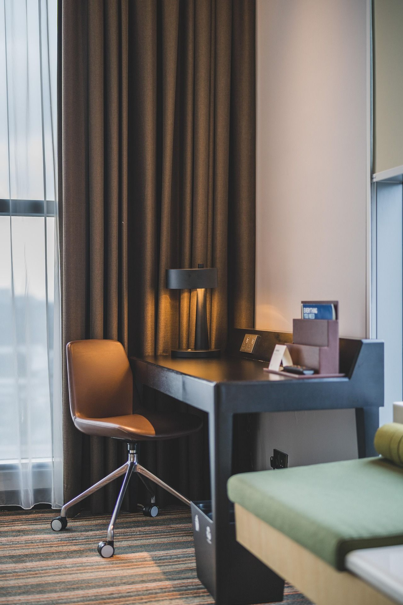

AI for the guest: felt in the room, not in an app store
Guests do not download hotel apps. The guest-facing layer therefore lives where guests already are — the Wi-Fi welcome page, a QR in the room, WhatsApp or SMS, the phone on the desk — and routes every request straight into the department modules so it is tracked to completion.
Figure H · The guest journey, and the module each moment lands in
Why ours is different
Most guest-messaging tools stop at the message. Because HosPRO owns the department modules, a guest request becomes a real task with an owner, a timer and a completion — and the guest is told when it is done.
Guardrails
Anything involving money, access or safety is handed to a person. The assistant never promises what the modules cannot track. Consent and privacy rules from the Wi-Fi portal apply throughout.
Measures
Request-to-done time · faults found by staff vs guests · review scores · repeat and direct booking share · upsell revenue per stay. All reportable from existing collections plus the guest profile.

The guest never sees the system — only a room that is ready and a fault that was fixed.